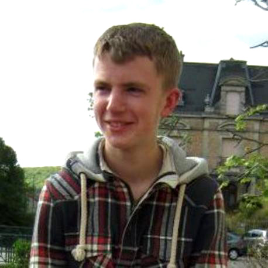
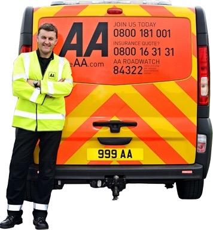

A WORTHY CAUSE

In October 2012, The Bellis family and their friends lost their beloved Jack as the result of an avoidable accident. Since Jack's passing, family and friends have vowed to keep Jack's memory at the forefront of people's minds by promoting Jack's legacy....The Jack Bellis Double Take Campaign.
The campaign idea, small stickers on a vehicle's rear view mirrors to prompt drivers to do a "double take" before carrying out a manoeuvre was adopted by The Automobile Association Charitable Trust and has since become a global success story. The AA campaign, headed by Edmund King OBE has led to some of the world's leading motoring organisations launching their own versions of #AAThinkBikes Campaign which itself, has gained global recognition and has also won several awards for road safety awareness. The campaigns are focused on doing all they can to save many families from the pain that Jack's family and friends have had to endure.
As part of the ongoing events to keep awareness for both campaigns at the fore, Bellis family friend and AA Patrol, Tony Rich will be cycling from Land's End to John O'Groats from 2nd -11th September 2016. Tony will be supported by his wife Michelle and hopes to raise both awareness for #AAThinkBikes and also raise funds for Jack Bellis Double Take, which subsidises motorcycle training and equipment for young motorcyclists. Any donations will be gratefully received and will go towards keeping riders safe on our roads. Any donations of cycling equipment of any kind would also be very well received as this is a self-funded trip, so every little helps. Cyclists are welcome to join the ride at any stage, details will be posted closer to the event start date.
Thanks for taking the time to read our note,
From all at #jackbellisdoubletake and #AAThinkBikes
Read more...Google: Tony Rich, AA Think Bikes FIM, FIA

THANKS IN ADVANCE FOR SUPPORTING THIS VERY WORTHY CAUSE
DONATE